pacman::p_load(sf, tidyverse, tmap, raster, spatstat, sparr, animation)Take-Home Exercise 1
Background
Armed conflict has been on the rise since about 2012, after a decline in the 1990s and early 2000s. First came conflicts in Libya, Syria and Yemen, triggered by the 2011 Arab uprisings. Libya’s instability spilled south, helping set off a protracted crisis in the Sahel region. A fresh wave of major combat followed: the 2020 Azerbaijani-Armenian war over the Nagorno-Karabakh enclave, horrific fighting in Ethiopia’s northern Tigray region that began weeks later, the conflict prompted by the Myanmar army’s 2021 power grab and Russia’s 2022 assault on Ukraine. Add to those 2023’s devastation in Sudan and Gaza. Around the globe, more people are dying in fighting, being forced from their homes or in need of life-saving aid than in decades.
We will be diving into the armed conflict in Myanmar, following the army’s coup that lead to Myanmar’s military rule in 2021, where Myanmar’s previous leader, Aung San Suu Kyi, was placed under arrest (Maizland, 2022). This has lead to civilian killings and arrest for those opposing the military, leading to over 10,000 detainees since the 2021 coup, according to a United Nation report (Farge & Mantovani, 2024). Specifically, we will be looking at the trends of violence shown in Myanmar and try to explain any patterns observed.
The Data
Armed conflict data
For the purpose of this assignment, armed conflict data of Myanmar between 2021-2024 from Armed Conflict Location & Event Data (ACLED), an independent, impartial, international non-profit organization collecting data on violent conflict and protest in all countries and territories in the world, is used.
GIS Data
I have taken the Mynamar District Boundaries (Admin2) from https://geonode.themimu.info/layers/geonode%3Ammr_polbnda_adm2_250k_mimu
Importing Packages and Data
Before we start, we need to import the data and ensure we modify it as needed. Firstly, we start of by loading in the relevant packages that will be needed.
Now, we can load in our data. Let’s start with the data from ACLED.
acled_sf = read_csv("data/raw/2021-01-01-2024-06-30-Southeast_Asia-Myanmar.csv") %>%
st_as_sf(coords = c("longitude", "latitude"), crs = 4326) %>%
st_transform(crs = 32647) %>%
mutate(event_date = dmy(event_date)) %>%
mutate(event_quarter = quarter(event_date)) %>%
mutate(event_year = year(event_date)) Above we have taken the data and transformed it into a sf data frame using st_as_sf, before transforming it to the projection of WGS 84 / UTM zone 47N, one of the projection CRS for Myanmar. I have also modified the event_date field to be in a Date format for R to recognise it as a date, before adding in 2 additional fields: the year of the event (event_year), and which quarter of the year the event takes place (event_quarter).
Now, let us import the boundary data.
mimu_sub = st_read(dsn = "data/raw/MIMU_District_Admin2",
layer = "mmr_polbnda_adm2_250k_mimu") Now we have the boundary data, but we need to verify its CRS.
st_crs(mimu_sub)The data is projected to 4326, which is the standard for WGS 84. We should project it to 32647 as well.
mimu_sub = st_transform(mimu_sub, crs = 32647)In order to preserve the CRS transformation and mutation of data, I shall write them into an rds file. This reduces the need to continually transform them every time this page is rendered.
write_rds(acled_sf, "data/rds/acled_sf.rds")
write_rds(mimu_sub, "data/rds/mimu_sub.rds")With the files written, I can put “eval: false” on the above code chunks. From now on, we will simply need to read the rds files to obtain back the data.
acled_sf = read_rds("data/rds/acled_sf.rds")
mimu_sub = read_rds("data/rds/mimu_sub.rds")Data Wrangling
Filtering Data
Firstly, let us divide the ACLED data into its respective year and quarters. This is done through filtering the event_year and event_quarter
acled_sf_21_Q1 = acled_sf %>% filter(event_year == 2021, event_quarter == 1)
acled_sf_21_Q2 = acled_sf %>% filter(event_year == 2021, event_quarter == 2)
acled_sf_21_Q3 = acled_sf %>% filter(event_year == 2021, event_quarter == 3)
acled_sf_21_Q4 = acled_sf %>% filter(event_year == 2021, event_quarter == 4)
acled_sf_22_Q1 = acled_sf %>% filter(event_year == 2022, event_quarter == 1)
acled_sf_22_Q2 = acled_sf %>% filter(event_year == 2022, event_quarter == 2)
acled_sf_22_Q3 = acled_sf %>% filter(event_year == 2022, event_quarter == 3)
acled_sf_22_Q4 = acled_sf %>% filter(event_year == 2022, event_quarter == 4)
acled_sf_23_Q1 = acled_sf %>% filter(event_year == 2023, event_quarter == 1)
acled_sf_23_Q2 = acled_sf %>% filter(event_year == 2023, event_quarter == 2)
acled_sf_23_Q3 = acled_sf %>% filter(event_year == 2023, event_quarter == 3)
acled_sf_23_Q4 = acled_sf %>% filter(event_year == 2023, event_quarter == 4)
acled_sf_24_Q1 = acled_sf %>% filter(event_year == 2024, event_quarter == 1)
acled_sf_24_Q2 = acled_sf %>% filter(event_year == 2024, event_quarter == 2)Now, for future reference, let us do a count of the types of events. The input “sort = TRUE” will arrange it in a descending order
acled_sf %>% count(event_type, sort = TRUE)Simple feature collection with 6 features and 2 fields
Geometry type: MULTIPOINT
Dimension: XY
Bounding box: xmin: -208804.4 ymin: 1103500 xmax: 640934.5 ymax: 3042960
Projected CRS: WGS 84 / UTM zone 47N
# A tibble: 6 × 3
event_type n geometry
* <chr> <int> <MULTIPOINT [m]>
1 Explosions/Remote violence 12208 ((-208804.4 2357274), (-206931.7 2359490), (…
2 Strategic developments 12126 ((-206931.7 2359490), (-201788.2 2366580), (…
3 Battles 12049 ((-207135 2358896), (-206931.7 2359490), (-2…
4 Protests 8829 ((-191409.1 2317222), (-174344.6 2321971), (…
5 Violence against civilians 6225 ((-206931.7 2359490), (-204784 2358873), (-2…
6 Riots 116 ((-21578.24 2371638), (275.0944 2569257), (2…As we can see, out of the 6 event types, there seem to be less riots. As such, we will not be focusing as much on that and instead be focused more on the other 5 event types. I will import them as their own sf data frames.
protests_sf = acled_sf %>% filter(event_type == "Protests")
battles_sf = acled_sf %>% filter(event_type == "Battles")
develop_sf = acled_sf %>% filter(event_type == "Strategic developments")
violence_sf = acled_sf %>% filter(event_type == "Violence against civilians")
explosions_sf = acled_sf %>% filter(event_type == "Explosions/Remote violence")Creating ppp and owin objects
In order to use the data, we need to transform them into ppp objects.
acled_ppp = as.ppp(acled_sf)Warning in as.ppp.sf(acled_sf): only first attribute column is used for marksacled_ppp_21_Q1 = as.ppp(acled_sf_21_Q1)Warning in as.ppp.sf(acled_sf_21_Q1): only first attribute column is used for
marksacled_ppp_21_Q2 = as.ppp(acled_sf_21_Q2)Warning in as.ppp.sf(acled_sf_21_Q2): only first attribute column is used for
marksacled_ppp_21_Q3 = as.ppp(acled_sf_21_Q3)Warning in as.ppp.sf(acled_sf_21_Q3): only first attribute column is used for
marksacled_ppp_21_Q4 = as.ppp(acled_sf_21_Q4)Warning in as.ppp.sf(acled_sf_21_Q4): only first attribute column is used for
marksacled_ppp_22_Q1 = as.ppp(acled_sf_22_Q1)Warning in as.ppp.sf(acled_sf_22_Q1): only first attribute column is used for
marksacled_ppp_22_Q2 = as.ppp(acled_sf_22_Q2)Warning in as.ppp.sf(acled_sf_22_Q2): only first attribute column is used for
marksacled_ppp_22_Q3 = as.ppp(acled_sf_22_Q3)Warning in as.ppp.sf(acled_sf_22_Q3): only first attribute column is used for
marksacled_ppp_22_Q4 = as.ppp(acled_sf_22_Q4)Warning in as.ppp.sf(acled_sf_22_Q4): only first attribute column is used for
marksacled_ppp_23_Q1 = as.ppp(acled_sf_23_Q1)Warning in as.ppp.sf(acled_sf_23_Q1): only first attribute column is used for
marksacled_ppp_23_Q2 = as.ppp(acled_sf_23_Q2)Warning in as.ppp.sf(acled_sf_23_Q2): only first attribute column is used for
marksacled_ppp_23_Q3 = as.ppp(acled_sf_23_Q3)Warning in as.ppp.sf(acled_sf_23_Q3): only first attribute column is used for
marksacled_ppp_23_Q4 = as.ppp(acled_sf_23_Q4)Warning in as.ppp.sf(acled_sf_23_Q4): only first attribute column is used for
marksacled_ppp_24_Q1 = as.ppp(acled_sf_24_Q1)Warning in as.ppp.sf(acled_sf_24_Q1): only first attribute column is used for
marksacled_ppp_24_Q2 = as.ppp(acled_sf_24_Q2)Warning in as.ppp.sf(acled_sf_24_Q2): only first attribute column is used for
marksNow, we will create the owin object using our boundary data, and attach it to the ppp objects.
mimu_sub_owin = as.owin(mimu_sub)
mm_ppp_21_Q1 = acled_ppp_21_Q1[mimu_sub_owin]
mm_ppp_21_Q2 = acled_ppp_21_Q2[mimu_sub_owin]
mm_ppp_21_Q3 = acled_ppp_21_Q3[mimu_sub_owin]
mm_ppp_21_Q4 = acled_ppp_21_Q4[mimu_sub_owin]
mm_ppp_22_Q1 = acled_ppp_22_Q1[mimu_sub_owin]
mm_ppp_22_Q2 = acled_ppp_22_Q2[mimu_sub_owin]
mm_ppp_22_Q3 = acled_ppp_22_Q3[mimu_sub_owin]
mm_ppp_22_Q4 = acled_ppp_22_Q4[mimu_sub_owin]
mm_ppp_23_Q1 = acled_ppp_23_Q1[mimu_sub_owin]
mm_ppp_23_Q2 = acled_ppp_23_Q2[mimu_sub_owin]
mm_ppp_23_Q3 = acled_ppp_23_Q3[mimu_sub_owin]
mm_ppp_23_Q4 = acled_ppp_23_Q4[mimu_sub_owin]
mm_ppp_24_Q1 = acled_ppp_24_Q1[mimu_sub_owin]
mm_ppp_24_Q2 = acled_ppp_24_Q2[mimu_sub_owin]As the data will be in meters, I will re-scale them to km, this is for the KDE layers.
mm_ppp_21_Q1.km <- rescale.ppp(mm_ppp_21_Q1, 1000, "km")
mm_ppp_21_Q2.km <- rescale.ppp(mm_ppp_21_Q2, 1000, "km")
mm_ppp_21_Q3.km <- rescale.ppp(mm_ppp_21_Q3, 1000, "km")
mm_ppp_21_Q4.km <- rescale.ppp(mm_ppp_21_Q4, 1000, "km")
mm_ppp_22_Q1.km <- rescale.ppp(mm_ppp_22_Q1, 1000, "km")
mm_ppp_22_Q2.km <- rescale.ppp(mm_ppp_22_Q2, 1000, "km")
mm_ppp_22_Q3.km <- rescale.ppp(mm_ppp_22_Q3, 1000, "km")
mm_ppp_22_Q4.km <- rescale.ppp(mm_ppp_22_Q4, 1000, "km")
mm_ppp_23_Q1.km <- rescale.ppp(mm_ppp_23_Q1, 1000, "km")
mm_ppp_23_Q2.km <- rescale.ppp(mm_ppp_23_Q2, 1000, "km")
mm_ppp_23_Q3.km <- rescale.ppp(mm_ppp_23_Q3, 1000, "km")
mm_ppp_23_Q4.km <- rescale.ppp(mm_ppp_23_Q4, 1000, "km")
mm_ppp_24_Q1.km <- rescale.ppp(mm_ppp_24_Q1, 1000, "km")
mm_ppp_24_Q2.km <- rescale.ppp(mm_ppp_24_Q2, 1000, "km")Now, using the main ACLED data, we can check for duplicates.
any(duplicated(acled_ppp))[1] FALSEThere seems to be no duplicates, which allows us to continue using the data and its subsets. I will grab a quarter and plot it out to see how it looks like.
plot(mm_ppp_21_Q1)Warning in default.charmap(ntypes, chars): Too many types to display every type
as a different characterWarning: Only 10 out of 3694 symbols are shown in the symbol mapAs we can see, there is a lot of data for just 1 quarter. However, some patterns are already visible, such as the heavy amount of events happening in the centre of Myanmar. To get a better look of this, we should derive the KDE layers.
Computing KDE Layers
Testing Kernel Methods
Let us compute the KDE for Myanmar’s ACLED data using bw.diggle.
kde_mm_21_Q1.bw = density(mm_ppp_21_Q1.km, sigma = bw.diggle, edge = TRUE, kernel = "gaussian")
plot(kde_mm_21_Q1.bw)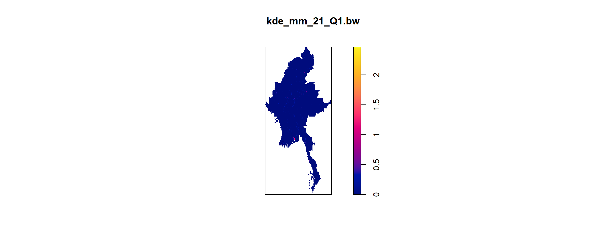
The data is not visible, using bw.diggle to get the bandwidth is not sufficient. We need to test out using a larger bandwidth. Here I attempt to use the adaptive.density() method:
mm_adaptive = adaptive.density(mm_ppp_21_Q1, method="kernel")
plot(mm_adaptive)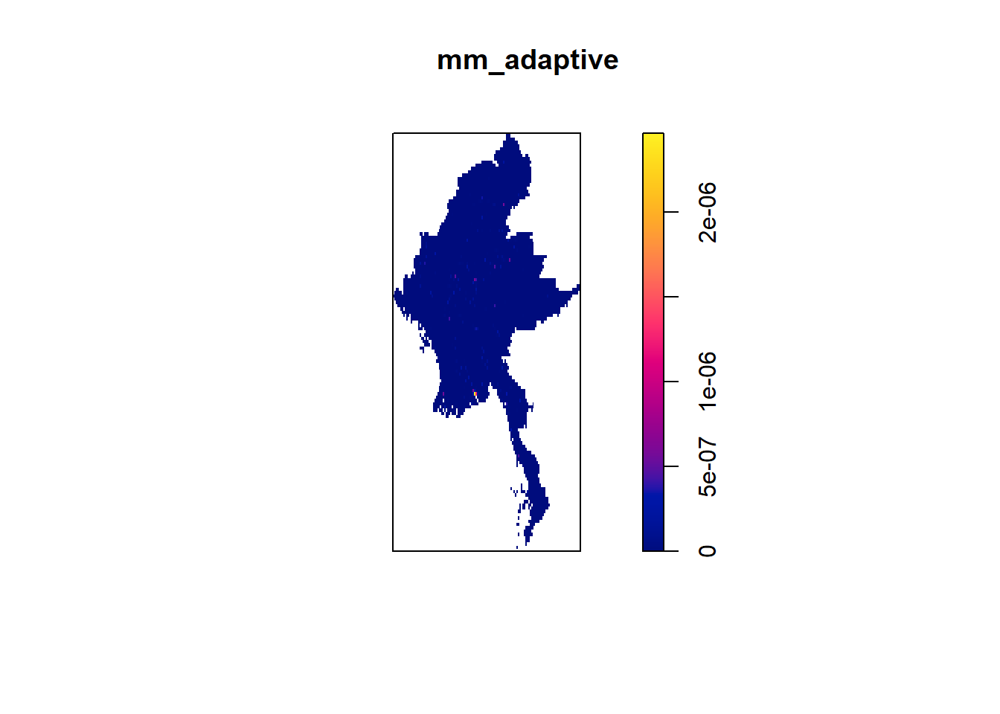
The data is still not visible. we should find the larger sigma value using adaptive bandwidth methods.
kde_mm_21_Q1.ppl = density(mm_ppp_21_Q1.km, sigma = bw.ppl, edge = TRUE, kernel = "gaussian")
kde_mm_21_Q1.CvL = density(mm_ppp_21_Q1.km, sigma = bw.CvL, edge = TRUE, kernel = "gaussian")
kde_mm_21_Q1.scott = density(mm_ppp_21_Q1.km, sigma = bw.scott, edge = TRUE, kernel = "gaussian")
par(mfrow=c(2,2))
plot(kde_mm_21_Q1.ppl)
plot(kde_mm_21_Q1.CvL)
plot(kde_mm_21_Q1.scott)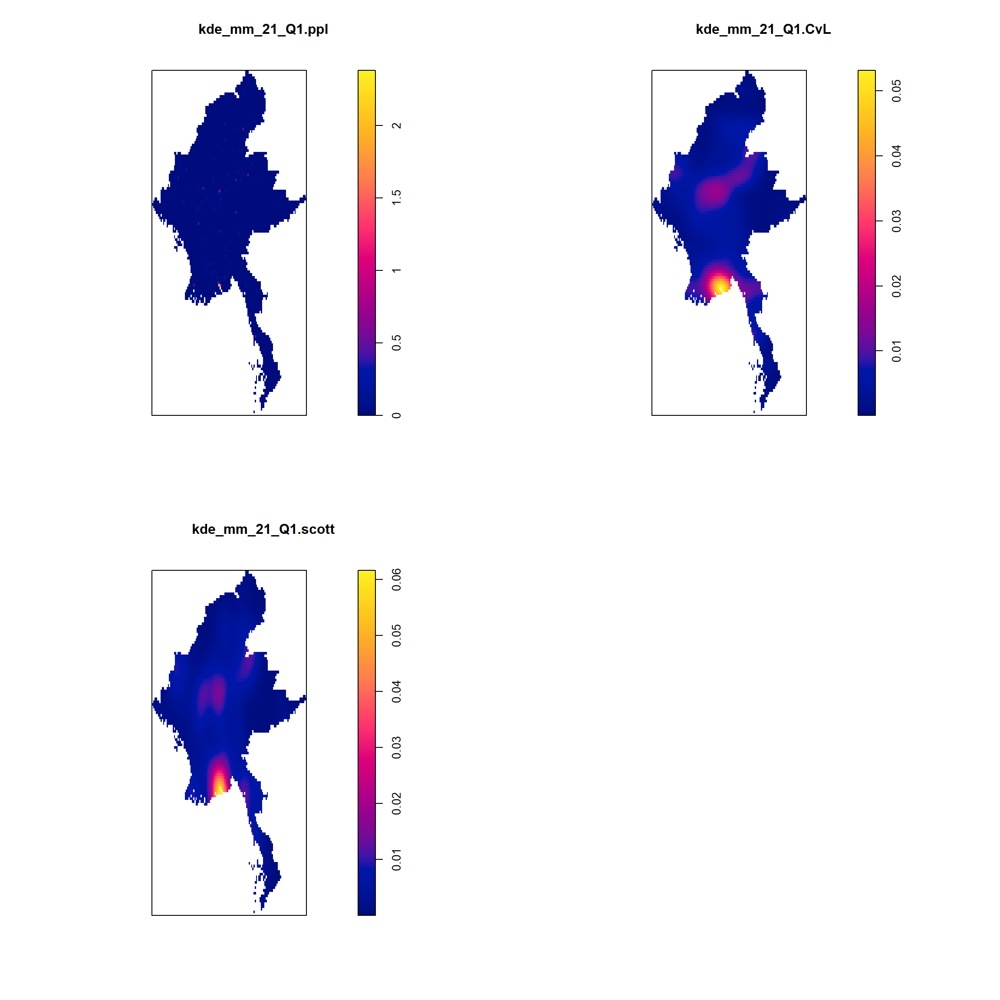
We do see more representation using bw.scott() and bw.CvL(), and I will elect to use the bw.CvL for the remaining KDE Layers for better clarity of the data.
Plotting monthly KDE Layers
I shall use bw.CvL() for the remaining quarterly KDE layers.
kde_mm_21_Q1.CvL = density(mm_ppp_21_Q1.km, sigma = bw.CvL, edge = TRUE, kernel = "gaussian")
kde_mm_21_Q2.CvL = density(mm_ppp_21_Q2.km, sigma = bw.CvL, edge = TRUE, kernel = "gaussian")
kde_mm_21_Q3.CvL = density(mm_ppp_21_Q3.km, sigma = bw.CvL, edge = TRUE, kernel = "gaussian")
kde_mm_21_Q4.CvL = density(mm_ppp_21_Q4.km, sigma = bw.CvL, edge = TRUE, kernel = "gaussian")
par(mfrow = c(2,2))
plot(kde_mm_21_Q1.CvL)
plot(kde_mm_21_Q2.CvL)
plot(kde_mm_21_Q3.CvL)
plot(kde_mm_21_Q4.CvL)
mtext("Myanmar Conflict 2021", side = 3, line = -2, outer = TRUE)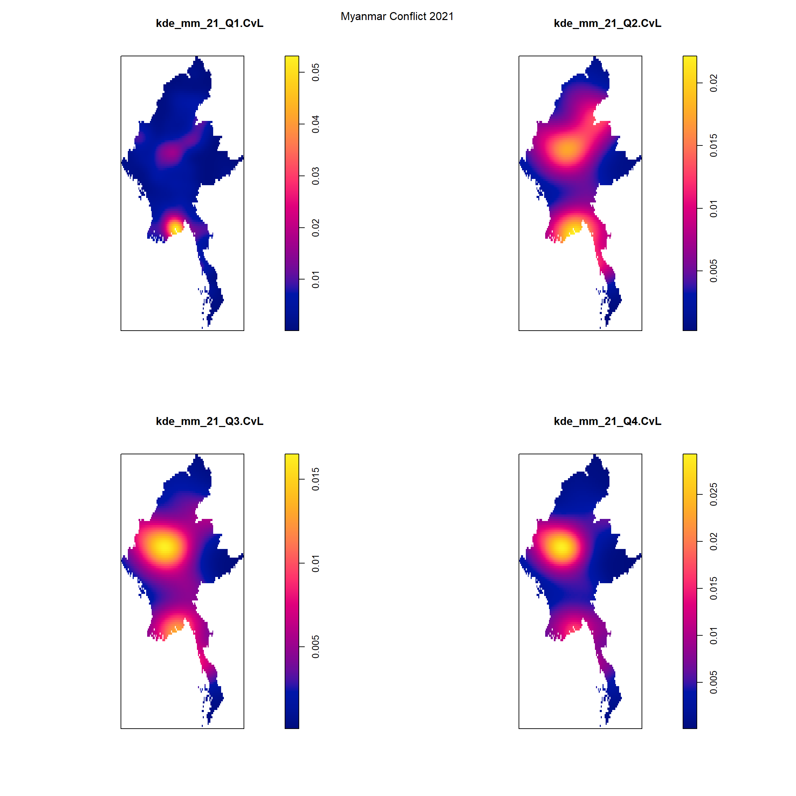
kde_mm_22_Q1.CvL = density(mm_ppp_22_Q1.km, sigma = bw.CvL, edge = TRUE, kernel = "gaussian")
kde_mm_22_Q2.CvL = density(mm_ppp_22_Q2.km, sigma = bw.CvL, edge = TRUE, kernel = "gaussian")
kde_mm_22_Q3.CvL = density(mm_ppp_22_Q3.km, sigma = bw.CvL, edge = TRUE, kernel = "gaussian")
kde_mm_22_Q4.CvL = density(mm_ppp_22_Q4.km, sigma = bw.CvL, edge = TRUE, kernel = "gaussian")
par(mfrow = c(2,2))
plot(kde_mm_22_Q1.CvL)
plot(kde_mm_22_Q2.CvL)
plot(kde_mm_22_Q3.CvL)
plot(kde_mm_22_Q4.CvL)
mtext("Myanmar Conflict 2022", side = 3, line = -1, outer = TRUE)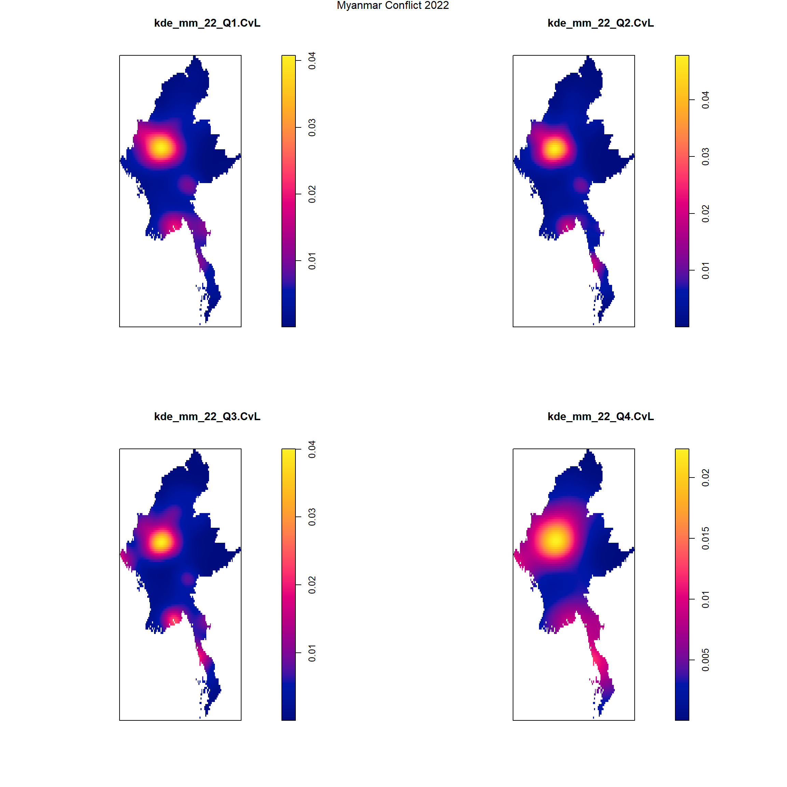
kde_mm_23_Q1.CvL = density(mm_ppp_23_Q1.km, sigma = bw.CvL, edge = TRUE, kernel = "gaussian")
kde_mm_23_Q2.CvL = density(mm_ppp_23_Q2.km, sigma = bw.CvL, edge = TRUE, kernel = "gaussian")
kde_mm_23_Q3.CvL = density(mm_ppp_23_Q3.km, sigma = bw.CvL, edge = TRUE, kernel = "gaussian")
kde_mm_23_Q4.CvL = density(mm_ppp_23_Q4.km, sigma = bw.CvL, edge = TRUE, kernel = "gaussian")
par(mfrow = c(2,2))
plot(kde_mm_23_Q1.CvL)
plot(kde_mm_23_Q2.CvL)
plot(kde_mm_23_Q3.CvL)
plot(kde_mm_23_Q4.CvL)
mtext("Myanmar Conflict 2023", side = 3, line = -2, outer = TRUE)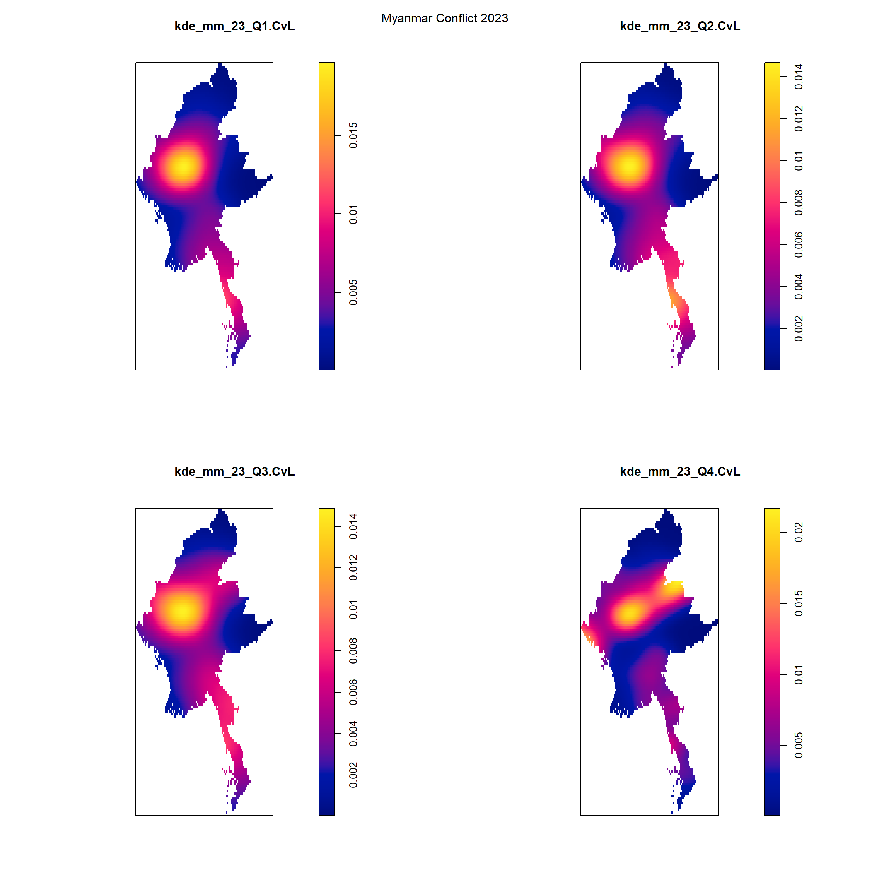
kde_mm_24_Q1.CvL = density(mm_ppp_24_Q1.km, sigma = bw.CvL, edge = TRUE, kernel = "gaussian")
kde_mm_24_Q2.CvL = density(mm_ppp_24_Q2.km, sigma = bw.CvL, edge = TRUE, kernel = "gaussian")
par(mfrow = c(1,2))
plot(kde_mm_24_Q1.CvL)
plot(kde_mm_24_Q2.CvL)
mtext("Myanmar Conflict 2024", side = 3, line = -2, outer = TRUE)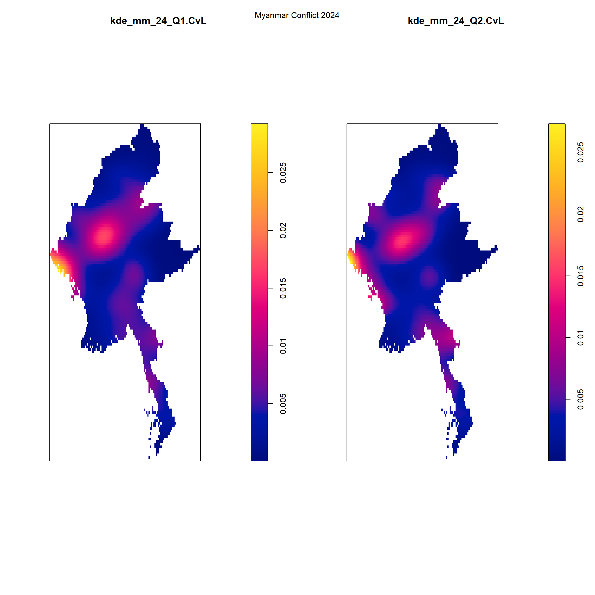
2nd Order Spatial Point Analysis
Based on the observations above, we can see how there is high clustering of events occurring within Myanmar. This is particular around 2023, Q2, where events seem to be highly clustered around 2 areas. However, we see a further spread of such events across 2023, Q4, before it eventually starts to reduce in 2024. We should observe the movement of these events in 2 ways:
- How much clustering do we see from 2023 Q2 to Q4? This will show the movement of events occurring,
- What are the event types that are moving? This could help us visualise the pattern of attacks.
Our second point can be visualised through spatio-temporal point pattern analysis. Now using 2nd order spatial point analysis, we can observe our first point. This will be done using G-Function. F-function will not give us a complete picture, while K and L-functions are too computationally expensive.
acled_sf %>% filter(event_year == 2023) %>% count(event_quarter)Simple feature collection with 4 features and 2 fields
Geometry type: MULTIPOINT
Dimension: XY
Bounding box: xmin: -206931.7 ymin: 1103500 xmax: 604775.1 ymax: 3027042
Projected CRS: WGS 84 / UTM zone 47N
# A tibble: 4 × 3
event_quarter n geometry
* <int> <int> <MULTIPOINT [m]>
1 1 3368 ((-199243.8 2366471), (-191409.1 2317222), (-178063.2 229…
2 2 2921 ((-191261.5 2351144), (-187696.5 2324700), (-174344.6 232…
3 3 3200 ((-197883.4 2339678), (-196507.9 2341782), (-193232 23463…
4 4 3753 ((-206931.7 2359490), (-204784 2358873), (-202989.4 23568…Based on the count, we do see a growth in the number of events occuring from Q2 to Q4. Now, we shall calculate the envelope and see how the observed data compares. This will be done using G-Function.
G_mm_23_Q2.csr = envelope(mm_ppp_23_Q2.km, Gest, nsim = 99)Generating 99 simulations of CSR ...
1, 2, [3:29 remaining] 3,
[3:31 remaining] 4, [3:30 remaining] 5, [3:27 remaining] 6,
[3:25 remaining] 7, [3:24 remaining] 8, [3:22 remaining] 9,
[3:24 remaining] 10, [3:22 remaining] 11, [3:19 remaining] 12,
[3:16 remaining] 13, [3:14 remaining] 14, [3:12 remaining] 15,
[3:09 remaining] 16, [3:07 remaining] 17, [3:04 remaining] 18,
[3:01 remaining] 19, [2:59 remaining] 20, [2:56 remaining] 21,
[2:54 remaining] 22, [2:52 remaining] 23, [2:50 remaining] 24,
[2:47 remaining] 25, [2:45 remaining] 26, [2:42 remaining] 27,
[2:40 remaining] 28, [2:38 remaining] 29, [2:35 remaining] 30,
[2:33 remaining] 31, [2:30 remaining] 32, [2:28 remaining] 33,
[2:26 remaining] 34, [2:23 remaining] 35, [2:21 remaining] 36,
[2:19 remaining] 37, [2:17 remaining] 38, [2:15 remaining] 39,
[2:12 remaining] 40, [2:10 remaining] 41, [2:08 remaining] 42,
[2:05 remaining] 43, [2:03 remaining] 44, [2:01 remaining] 45,
[1:58 remaining] 46, [1:56 remaining] 47, [1:54 remaining] 48,
[1:52 remaining] 49, [1:50 remaining] 50, [1:47 remaining] 51,
[1:45 remaining] 52, [1:43 remaining] 53, [1:41 remaining] 54,
[1:38 remaining] 55, [1:36 remaining] 56, [1:34 remaining] 57,
[1:32 remaining] 58, [1:29 remaining] 59, [1:27 remaining] 60,
[1:25 remaining] 61, [1:23 remaining] 62, [1:21 remaining] 63,
[1:19 remaining] 64, [1:16 remaining] 65, [1:14 remaining] 66,
[1:12 remaining] 67, [1:10 remaining] 68, [1:08 remaining] 69,
[1:05 remaining] 70, [1:03 remaining] 71, [1:01 remaining] 72,
[59 sec remaining] 73, [57 sec remaining] 74, [54 sec remaining] 75,
[52 sec remaining] 76, [50 sec remaining] 77, [48 sec remaining] 78,
[46 sec remaining] 79, [43 sec remaining] 80, [41 sec remaining] 81,
[39 sec remaining] 82, [37 sec remaining] 83, [35 sec remaining] 84,
[33 sec remaining] 85, [30 sec remaining] 86, [28 sec remaining] 87,
[26 sec remaining] 88, [24 sec remaining] 89, [22 sec remaining] 90,
[20 sec remaining] 91, [17 sec remaining] 92, [15 sec remaining] 93,
[13 sec remaining] 94, [11 sec remaining] 95, [9 sec remaining] 96,
[7 sec remaining] 97, [4 sec remaining] 98, [2 sec remaining]
99.
Done.G_mm_23_Q3.csr = envelope(mm_ppp_23_Q3.km, Gest, nsim = 99)Generating 99 simulations of CSR ...
1, 2, [3:44 remaining] 3,
[3:44 remaining] 4, [3:40 remaining] 5, [3:38 remaining] 6,
[3:35 remaining] 7, [3:32 remaining] 8, [3:30 remaining] 9,
[3:27 remaining] 10, [3:25 remaining] 11, [3:26 remaining] 12,
[3:23 remaining] 13, [3:20 remaining] 14, [3:18 remaining] 15,
[3:15 remaining] 16, [3:13 remaining] 17, [3:11 remaining] 18,
[3:08 remaining] 19, [3:06 remaining] 20, [3:04 remaining] 21,
[3:01 remaining] 22, [2:59 remaining] 23, [2:57 remaining] 24,
[2:55 remaining] 25, [2:53 remaining] 26, [2:50 remaining] 27,
[2:48 remaining] 28, [2:45 remaining] 29, [2:43 remaining] 30,
[2:41 remaining] 31, [2:38 remaining] 32, [2:36 remaining] 33,
[2:34 remaining] 34, [2:31 remaining] 35, [2:29 remaining] 36,
[2:27 remaining] 37, [2:25 remaining] 38, [2:22 remaining] 39,
[2:20 remaining] 40, [2:18 remaining] 41, [2:15 remaining] 42,
[2:13 remaining] 43, [2:11 remaining] 44, [2:08 remaining] 45,
[2:06 remaining] 46, [2:04 remaining] 47, [2:01 remaining] 48,
[1:59 remaining] 49, [1:57 remaining] 50, [1:55 remaining] 51,
[1:52 remaining] 52, [1:50 remaining] 53, [1:48 remaining] 54,
[1:45 remaining] 55, [1:43 remaining] 56, [1:40 remaining] 57,
[1:38 remaining] 58, [1:36 remaining] 59, [1:33 remaining] 60,
[1:31 remaining] 61, [1:29 remaining] 62, [1:27 remaining] 63,
[1:24 remaining] 64, [1:22 remaining] 65, [1:20 remaining] 66,
[1:17 remaining] 67, [1:15 remaining] 68, [1:13 remaining] 69,
[1:10 remaining] 70, [1:08 remaining] 71, [1:06 remaining] 72,
[1:03 remaining] 73, [1:01 remaining] 74, [59 sec remaining] 75,
[56 sec remaining] 76, [54 sec remaining] 77, [52 sec remaining] 78,
[49 sec remaining] 79, [47 sec remaining] 80, [45 sec remaining] 81,
[42 sec remaining] 82, [40 sec remaining] 83, [38 sec remaining] 84,
[35 sec remaining] 85, [33 sec remaining] 86, [31 sec remaining] 87,
[28 sec remaining] 88, [26 sec remaining] 89, [23 sec remaining] 90,
[21 sec remaining] 91, [19 sec remaining] 92, [16 sec remaining] 93,
[14 sec remaining] 94, [12 sec remaining] 95, [9 sec remaining] 96,
[7 sec remaining] 97, [5 sec remaining] 98, [2 sec remaining]
99.
Done.G_mm_23_Q4.csr = envelope(mm_ppp_23_Q4.km, Gest, nsim = 99)Generating 99 simulations of CSR ...
1, 2, [4:23 remaining] 3,
[4:18 remaining] 4, [4:15 remaining] 5, [4:12 remaining] 6,
[4:11 remaining] 7, [4:08 remaining] 8, [4:07 remaining] 9,
[4:10 remaining] 10, [4:07 remaining] 11, [4:03 remaining] 12,
[4:00 remaining] 13, [3:57 remaining] 14, [3:54 remaining] 15,
[3:51 remaining] 16, [3:49 remaining] 17, [3:46 remaining] 18,
[3:42 remaining] 19, [3:39 remaining] 20, [3:38 remaining] 21,
[3:35 remaining] 22, [3:32 remaining] 23, [3:29 remaining] 24,
[3:26 remaining] 25, [3:23 remaining] 26, [3:20 remaining] 27,
[3:17 remaining] 28, [3:14 remaining] 29, [3:11 remaining] 30,
[3:09 remaining] 31, [3:06 remaining] 32, [3:04 remaining] 33,
[3:01 remaining] 34, [2:58 remaining] 35, [2:55 remaining] 36,
[2:52 remaining] 37, [2:50 remaining] 38, [2:47 remaining] 39,
[2:44 remaining] 40, [2:41 remaining] 41, [2:38 remaining] 42,
[2:36 remaining] 43, [2:33 remaining] 44, [2:30 remaining] 45,
[2:28 remaining] 46, [2:25 remaining] 47, [2:22 remaining] 48,
[2:19 remaining] 49, [2:16 remaining] 50, [2:14 remaining] 51,
[2:11 remaining] 52, [2:08 remaining] 53, [2:05 remaining] 54,
[2:03 remaining] 55, [2:00 remaining] 56, [1:57 remaining] 57,
[1:54 remaining] 58, [1:52 remaining] 59, [1:49 remaining] 60,
[1:46 remaining] 61, [1:43 remaining] 62, [1:41 remaining] 63,
[1:38 remaining] 64, [1:35 remaining] 65, [1:32 remaining] 66,
[1:30 remaining] 67, [1:27 remaining] 68, [1:24 remaining] 69,
[1:21 remaining] 70, [1:19 remaining] 71, [1:16 remaining] 72,
[1:13 remaining] 73, [1:10 remaining] 74, [1:08 remaining] 75,
[1:05 remaining] 76, [1:02 remaining] 77, [1:00 remaining] 78,
[57 sec remaining] 79, [54 sec remaining] 80, [52 sec remaining] 81,
[49 sec remaining] 82, [46 sec remaining] 83, [43 sec remaining] 84,
[41 sec remaining] 85, [38 sec remaining] 86, [35 sec remaining] 87,
[33 sec remaining] 88, [30 sec remaining] 89, [27 sec remaining] 90,
[24 sec remaining] 91, [22 sec remaining] 92, [19 sec remaining] 93,
[16 sec remaining] 94, [14 sec remaining] 95, [11 sec remaining] 96,
[8 sec remaining] 97, [5 sec remaining] 98, [3 sec remaining]
99.
Done.Now let’s plot the three quarter’s G-values side-by-side.
par(mfrow = c(1,3))
plot(G_mm_23_Q2.csr)
plot(G_mm_23_Q3.csr)
plot(G_mm_23_Q4.csr)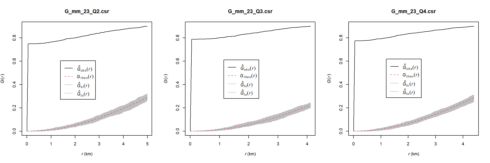
As expected, we do see more clustering in Q3 in the range of <500m, but Q2 and Q4 are generally around the same. Given the increase in the number of attacks across the three quarters, we could attribute Q4 to be an increase in the number of attacks instead, thus having the same relative G-value despite the KDE layer suggesting more dispersal.
Computing Spatio-Temporal KDE Layers
Now let us look at the 5 event types individually for our Spatio-Temporal KDE.
Protests
First, I shall filter them into individual years, then sort them by their quarters then convert them into ppp objects. This is to allow a ease of calculating the STKDE using spattemp.density(). To ensure that the objects are created correctly, I will print the summary for the 2021 data.
protest_21_sf = protests_sf %>% filter(event_year == 2021) %>% dplyr::select(event_quarter)
protest_22_sf = protests_sf %>% filter(event_year == 2022) %>% dplyr::select(event_quarter)
protest_23_sf = protests_sf %>% filter(event_year == 2023) %>% dplyr::select(event_quarter)
protest_24_sf = protests_sf %>% filter(event_year == 2024) %>% dplyr::select(event_quarter)
protest_21_ppp = as.ppp(protest_21_sf)
protest_22_ppp = as.ppp(protest_22_sf)
protest_23_ppp = as.ppp(protest_23_sf)
protest_24_ppp = as.ppp(protest_24_sf)
summary(protest_21_ppp)Marked planar point pattern: 5934 points
Average intensity 4.188551e-09 points per square unit
*Pattern contains duplicated points*
Coordinates are given to 13 decimal places
marks are numeric, of type 'integer'
Summary:
Min. 1st Qu. Median Mean 3rd Qu. Max.
1.000 1.000 2.000 1.826 2.000 4.000
Window: rectangle = [-138595, 591875.9] x [1103500.1, 3042960.3] units
(730500 x 1939000 units)
Window area = 1.41672e+12 square unitsNow, I will attach the boundary data to the ppp objects, and calculate the STKDE.
protest_21_owin = protest_21_ppp[mimu_sub_owin]
protest_22_owin = protest_22_ppp[mimu_sub_owin]
protest_23_owin = protest_23_ppp[mimu_sub_owin]
protest_24_owin = protest_24_ppp[mimu_sub_owin]
protest_21_st_kde= spattemp.density(protest_21_owin)Calculating trivariate smooth...Done.
Edge-correcting...Done.
Conditioning on time...Done.protest_22_st_kde= spattemp.density(protest_22_owin)Calculating trivariate smooth...Done.
Edge-correcting...Done.
Conditioning on time...Done.protest_23_st_kde= spattemp.density(protest_23_owin)Calculating trivariate smooth...Done.
Edge-correcting...Done.
Conditioning on time...Done.protest_24_st_kde= spattemp.density(protest_24_owin)Calculating trivariate smooth...Done.
Edge-correcting...Done.
Conditioning on time...Done.summary(protest_21_st_kde)Spatiotemporal Kernel Density Estimate
Bandwidths
h = 59999.26 (spatial)
lambda = 0.0015 (temporal)
No. of observations
5934
Spatial bound
Type: polygonal
2D enclosure: [-210008.6, 724647.6] x [1072026, 3158467]
Temporal bound
[1, 4]
Evaluation
128 x 128 x 4 trivariate lattice
Density range: [8.455845e-22, 3.141563e-09]Finally, I shall plot out the individual quarters. I will utilise for-loops to print out the STKDE layers individually so that I can accurately label each layer.
par(mfrow = c(4,4))
for(i in c(1,2,3,4)){
plot(protest_21_st_kde, i, override.par = FALSE, main = paste("2021 - Q", i))
}
for(i in c(1,2,3,4)){
plot(protest_22_st_kde, i, override.par = FALSE, main = paste("2022 - Q", i))
}
for(i in c(1,2,3,4)){
plot(protest_23_st_kde, i, override.par = FALSE, main = paste("2023 - Q", i))
}
for(i in c(1,2)){
plot(protest_24_st_kde, i, override.par = FALSE, main = paste("2024 - Q", i))
}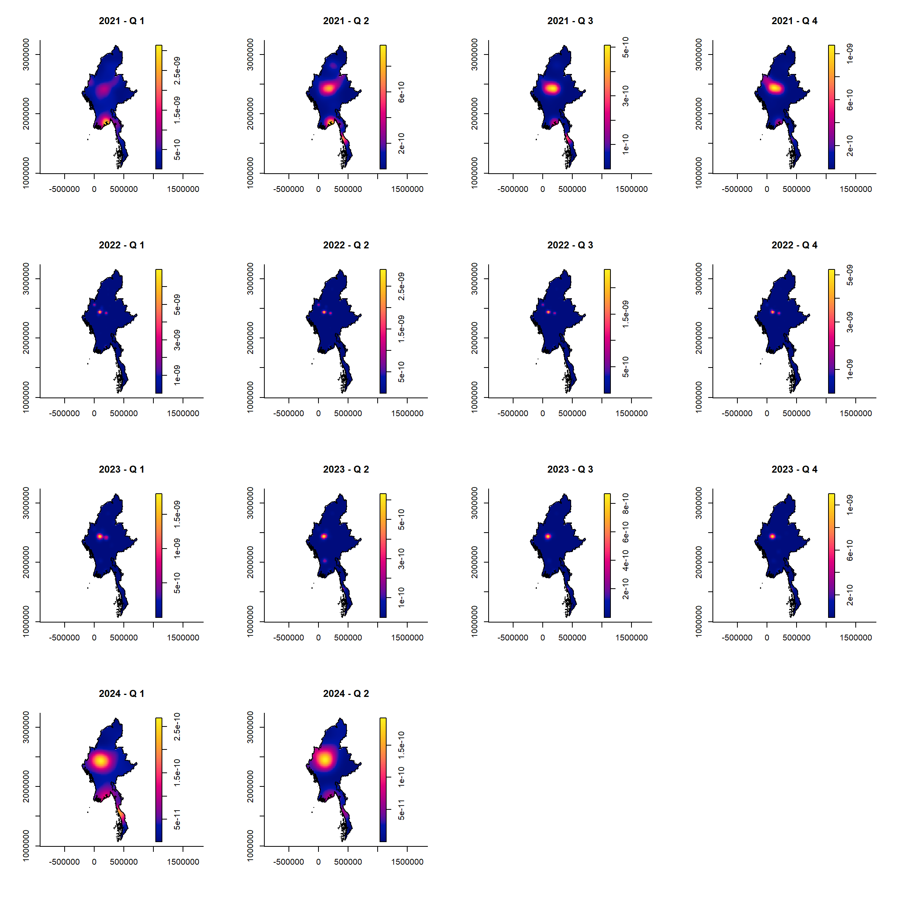
Now, I shall repeat the process for the remaining 4 event types.
Battles
battle_21_sf = battles_sf %>% filter(event_year == 2021) %>% dplyr::select(event_quarter)
battle_22_sf = battles_sf %>% filter(event_year == 2022) %>% dplyr::select(event_quarter)
battle_23_sf = battles_sf %>% filter(event_year == 2023) %>% dplyr::select(event_quarter)
battle_24_sf = battles_sf %>% filter(event_year == 2024) %>% dplyr::select(event_quarter)
battle_21_ppp = as.ppp(battle_21_sf)
battle_22_ppp = as.ppp(battle_22_sf)
battle_23_ppp = as.ppp(battle_23_sf)
battle_24_ppp = as.ppp(battle_24_sf)
summary(battle_21_ppp)Marked planar point pattern: 2234 points
Average intensity 1.665261e-09 points per square unit
*Pattern contains duplicated points*
Coordinates are given to 13 decimal places
marks are numeric, of type 'integer'
Summary:
Min. 1st Qu. Median Mean 3rd Qu. Max.
1.000 2.000 3.000 2.957 4.000 4.000
Window: rectangle = [-203795.3, 591875.9] x [1340466.9, 3026504.9] units
(795700 x 1686000 units)
Window area = 1.34153e+12 square unitsbattle_21_owin = battle_21_ppp[mimu_sub_owin]
battle_22_owin = battle_22_ppp[mimu_sub_owin]
battle_23_owin = battle_23_ppp[mimu_sub_owin]
battle_24_owin = battle_24_ppp[mimu_sub_owin]
battle_21_st_kde= spattemp.density(battle_21_owin)Calculating trivariate smooth...Done.
Edge-correcting...Done.
Conditioning on time...Done.battle_22_st_kde= spattemp.density(battle_22_owin)Calculating trivariate smooth...Done.
Edge-correcting...Done.
Conditioning on time...Done.battle_23_st_kde= spattemp.density(battle_23_owin)Calculating trivariate smooth...Done.
Edge-correcting...Done.
Conditioning on time...Done.battle_24_st_kde= spattemp.density(battle_24_owin)Calculating trivariate smooth...Done.
Edge-correcting...Done.
Conditioning on time...Done.summary(battle_21_st_kde)Spatiotemporal Kernel Density Estimate
Bandwidths
h = 69239.08 (spatial)
lambda = 0.0044 (temporal)
No. of observations
2234
Spatial bound
Type: polygonal
2D enclosure: [-210008.6, 724647.6] x [1072026, 3158467]
Temporal bound
[1, 4]
Evaluation
128 x 128 x 4 trivariate lattice
Density range: [1.090743e-20, 4.67676e-10]par(mfrow = c(4,4))
for(i in c(1,2,3,4)){
plot(battle_21_st_kde, i, override.par = FALSE, main = paste("2021 - Q", i))
}
for(i in c(1,2,3,4)){
plot(battle_22_st_kde, i, override.par = FALSE, main = paste("2022 - Q", i))
}
for(i in c(1,2,3,4)){
plot(battle_23_st_kde, i, override.par = FALSE, main = paste("2023 - Q", i))
}
for(i in c(1,2)){
plot(battle_24_st_kde, i, override.par = FALSE, main = paste("2024 - Q", i))
}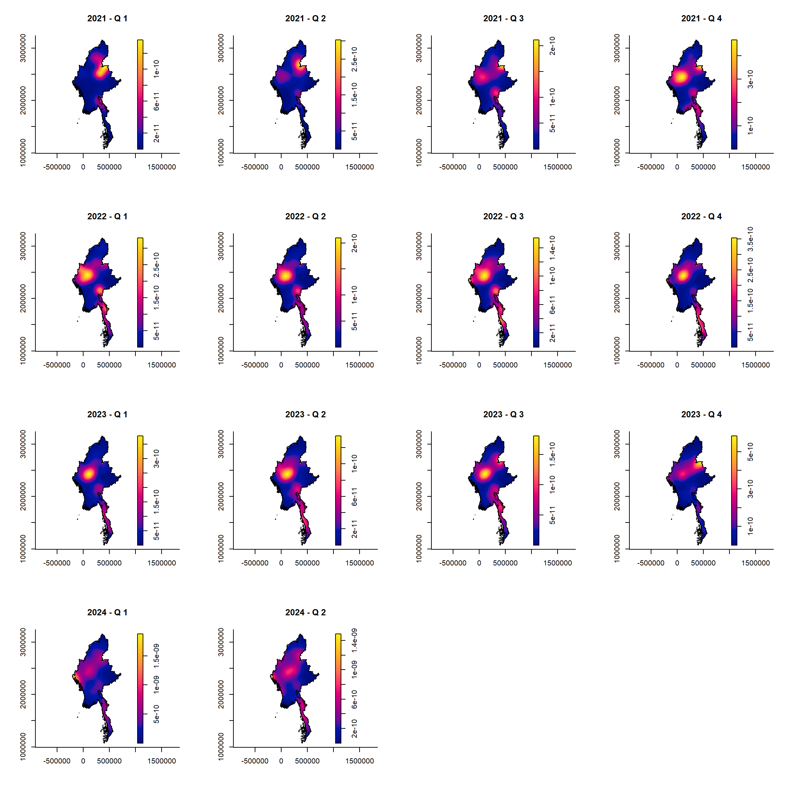
Strategic Developments
develop_21_sf = develop_sf %>% filter(event_year == 2021) %>% dplyr::select(event_quarter)
develop_22_sf = develop_sf %>% filter(event_year == 2022) %>% dplyr::select(event_quarter)
develop_23_sf = develop_sf %>% filter(event_year == 2023) %>% dplyr::select(event_quarter)
develop_24_sf = develop_sf %>% filter(event_year == 2024) %>% dplyr::select(event_quarter)
develop_21_ppp = as.ppp(develop_21_sf)
develop_22_ppp = as.ppp(develop_22_sf)
develop_23_ppp = as.ppp(develop_23_sf)
develop_24_ppp = as.ppp(develop_24_sf)
summary(develop_21_ppp)Marked planar point pattern: 3411 points
Average intensity 2.225079e-09 points per square unit
*Pattern contains duplicated points*
Coordinates are given to 13 decimal places
marks are numeric, of type 'integer'
Summary:
Min. 1st Qu. Median Mean 3rd Qu. Max.
1.000 2.000 3.000 2.824 4.000 4.000
Window: rectangle = [-198539.5, 591875.9] x [1103500.1, 3042960.3] units
(790400 x 1939000 units)
Window area = 1.53298e+12 square unitsdevelop_21_owin = develop_21_ppp[mimu_sub_owin]
develop_22_owin = develop_22_ppp[mimu_sub_owin]
develop_23_owin = develop_23_ppp[mimu_sub_owin]
develop_24_owin = develop_24_ppp[mimu_sub_owin]
develop_21_st_kde= spattemp.density(develop_21_owin)Calculating trivariate smooth...Done.
Edge-correcting...Done.
Conditioning on time...Done.develop_22_st_kde= spattemp.density(develop_22_owin)Calculating trivariate smooth...Done.
Edge-correcting...Done.
Conditioning on time...Done.develop_23_st_kde= spattemp.density(develop_23_owin)Calculating trivariate smooth...Done.
Edge-correcting...Done.
Conditioning on time...Done.develop_24_st_kde= spattemp.density(develop_24_owin)Calculating trivariate smooth...Done.
Edge-correcting...Done.
Conditioning on time...Done.summary(develop_21_st_kde)Spatiotemporal Kernel Density Estimate
Bandwidths
h = 64153.61 (spatial)
lambda = 0.0037 (temporal)
No. of observations
3411
Spatial bound
Type: polygonal
2D enclosure: [-210008.6, 724647.6] x [1072026, 3158467]
Temporal bound
[1, 4]
Evaluation
128 x 128 x 4 trivariate lattice
Density range: [9.667345e-15, 5.292478e-10]par(mfrow = c(4,4))
for(i in c(1,2,3,4)){
plot(develop_21_st_kde, i, override.par = FALSE, main = paste("2021 - Q", i))
}
for(i in c(1,2,3,4)){
plot(develop_22_st_kde, i, override.par = FALSE, main = paste("2022 - Q", i))
}
for(i in c(1,2,3,4)){
plot(develop_23_st_kde, i, override.par = FALSE, main = paste("2023 - Q", i))
}
for(i in c(1,2)){
plot(develop_24_st_kde, i, override.par = FALSE, main = paste("2024 - Q", i))
}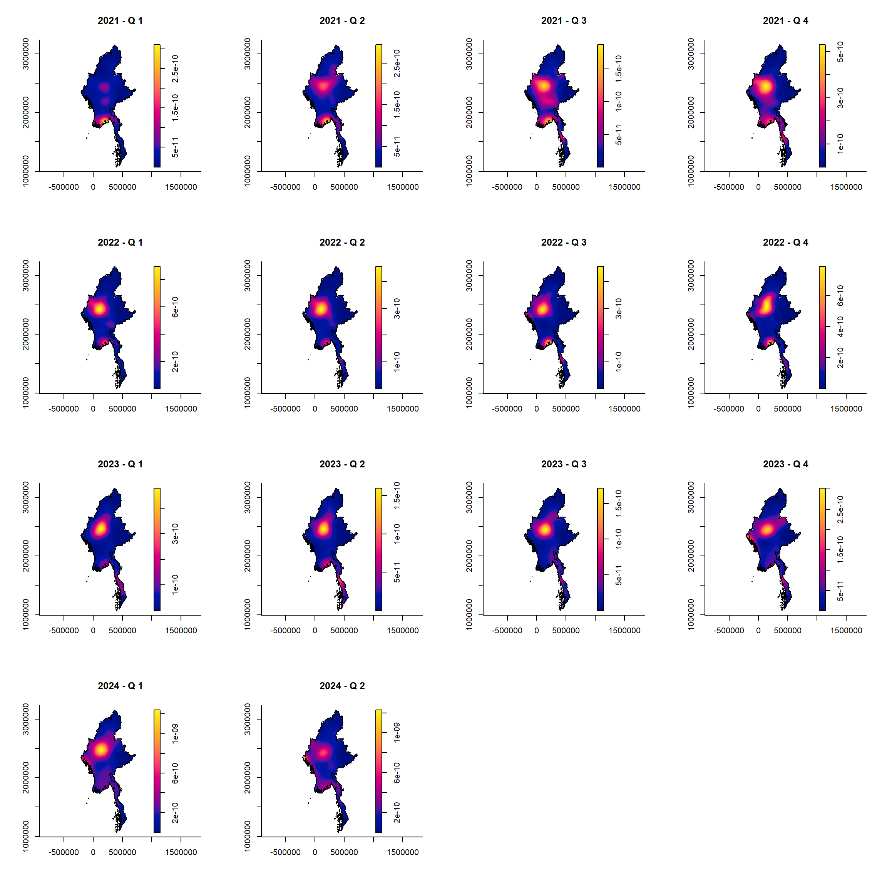
Violence against civilians
violence_21_sf = violence_sf %>% filter(event_year == 2021) %>% dplyr::select(event_quarter)
violence_22_sf = violence_sf %>% filter(event_year == 2022) %>% dplyr::select(event_quarter)
violence_23_sf = violence_sf %>% filter(event_year == 2023) %>% dplyr::select(event_quarter)
violence_24_sf = violence_sf %>% filter(event_year == 2024) %>% dplyr::select(event_quarter)
violence_21_ppp = as.ppp(violence_21_sf)
violence_22_ppp = as.ppp(violence_22_sf)
violence_23_ppp = as.ppp(violence_23_sf)
violence_24_ppp = as.ppp(violence_24_sf)
summary(violence_21_ppp)Marked planar point pattern: 1877 points
Average intensity 1.254296e-09 points per square unit
*Pattern contains duplicated points*
Coordinates are given to 13 decimal places
marks are numeric, of type 'integer'
Summary:
Min. 1st Qu. Median Mean 3rd Qu. Max.
1.000 2.000 3.000 2.968 4.000 4.000
Window: rectangle = [-191409.1, 591875.9] x [1132472.1, 3042960.3] units
(783300 x 1910000 units)
Window area = 1.49646e+12 square unitsviolence_21_owin = violence_21_ppp[mimu_sub_owin]
violence_22_owin = violence_22_ppp[mimu_sub_owin]
violence_23_owin = violence_23_ppp[mimu_sub_owin]
violence_24_owin = violence_24_ppp[mimu_sub_owin]
violence_21_st_kde= spattemp.density(violence_21_owin)Calculating trivariate smooth...Done.
Edge-correcting...Done.
Conditioning on time...Done.violence_22_st_kde= spattemp.density(violence_22_owin)Calculating trivariate smooth...Done.
Edge-correcting...Done.
Conditioning on time...Done.violence_23_st_kde= spattemp.density(violence_23_owin)Calculating trivariate smooth...Done.
Edge-correcting...Done.
Conditioning on time...Done.violence_24_st_kde= spattemp.density(violence_24_owin)Calculating trivariate smooth...Done.
Edge-correcting...Done.
Conditioning on time...Done.summary(violence_21_st_kde)Spatiotemporal Kernel Density Estimate
Bandwidths
h = 68873.22 (spatial)
lambda = 0.0052 (temporal)
No. of observations
1876
Spatial bound
Type: polygonal
2D enclosure: [-210008.6, 724647.6] x [1072026, 3158467]
Temporal bound
[1, 4]
Evaluation
128 x 128 x 4 trivariate lattice
Density range: [2.295996e-17, 4.505932e-10]par(mfrow = c(4,4))
for(i in c(1,2,3,4)){
plot(violence_21_st_kde, i, override.par = FALSE, main = paste("2021 - Q", i))
}
for(i in c(1,2,3,4)){
plot(violence_22_st_kde, i, override.par = FALSE, main = paste("2022 - Q", i))
}
for(i in c(1,2,3,4)){
plot(violence_23_st_kde, i, override.par = FALSE, main = paste("2023 - Q", i))
}
for(i in c(1,2)){
plot(violence_24_st_kde, i, override.par = FALSE, main = paste("2024 - Q", i))
}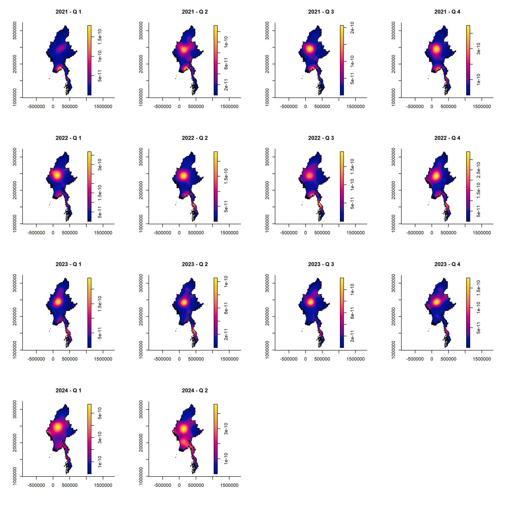
Explosions/Remote Violence
explosions_21_sf = explosions_sf %>% filter(event_year == 2021) %>% dplyr::select(event_quarter)
explosions_22_sf = explosions_sf %>% filter(event_year == 2022) %>% dplyr::select(event_quarter)
explosions_23_sf = explosions_sf %>% filter(event_year == 2023) %>% dplyr::select(event_quarter)
explosions_24_sf = explosions_sf %>% filter(event_year == 2024) %>% dplyr::select(event_quarter)
explosions_21_ppp = as.ppp(explosions_21_sf)
explosions_22_ppp = as.ppp(explosions_22_sf)
explosions_23_ppp = as.ppp(explosions_23_sf)
explosions_24_ppp = as.ppp(explosions_24_sf)
summary(explosions_21_ppp)Marked planar point pattern: 2704 points
Average intensity 1.918481e-09 points per square unit
*Pattern contains duplicated points*
Coordinates are given to 13 decimal places
marks are numeric, of type 'integer'
Summary:
Min. 1st Qu. Median Mean 3rd Qu. Max.
1.000 2.000 3.000 3.097 4.000 4.000
Window: rectangle = [-201788.2, 640934.5] x [1354010.7, 3026504.9] units
(842700 x 1672000 units)
Window area = 1.40945e+12 square unitsexplosions_21_owin = explosions_21_ppp[mimu_sub_owin]
explosions_22_owin = explosions_22_ppp[mimu_sub_owin]
explosions_23_owin = explosions_23_ppp[mimu_sub_owin]
explosions_24_owin = explosions_24_ppp[mimu_sub_owin]
explosions_21_st_kde= spattemp.density(explosions_21_owin)Calculating trivariate smooth...Done.
Edge-correcting...Done.
Conditioning on time...Done.explosions_22_st_kde= spattemp.density(explosions_22_owin)Calculating trivariate smooth...Done.
Edge-correcting...Done.
Conditioning on time...Done.explosions_23_st_kde= spattemp.density(explosions_23_owin)Calculating trivariate smooth...Done.
Edge-correcting...Done.
Conditioning on time...Done.explosions_24_st_kde= spattemp.density(explosions_24_owin)Calculating trivariate smooth...Done.
Edge-correcting...Done.
Conditioning on time...Done.summary(explosions_21_st_kde)Spatiotemporal Kernel Density Estimate
Bandwidths
h = 64684.59 (spatial)
lambda = 0.0033 (temporal)
No. of observations
2704
Spatial bound
Type: polygonal
2D enclosure: [-210008.6, 724647.6] x [1072026, 3158467]
Temporal bound
[1, 4]
Evaluation
128 x 128 x 4 trivariate lattice
Density range: [2.09422e-34, 1.138173e-09]par(mfrow = c(4,4))
for(i in c(1,2,3,4)){
plot(explosions_21_st_kde, i, override.par = FALSE, main = paste("2021 - Q", i))
}
for(i in c(1,2,3,4)){
plot(explosions_22_st_kde, i, override.par = FALSE, main = paste("2022 - Q", i))
}
for(i in c(1,2,3,4)){
plot(explosions_23_st_kde, i, override.par = FALSE, main = paste("2023 - Q", i))
}
for(i in c(1,2)){
plot(explosions_24_st_kde, i, override.par = FALSE, main = paste("2024 - Q", i))
}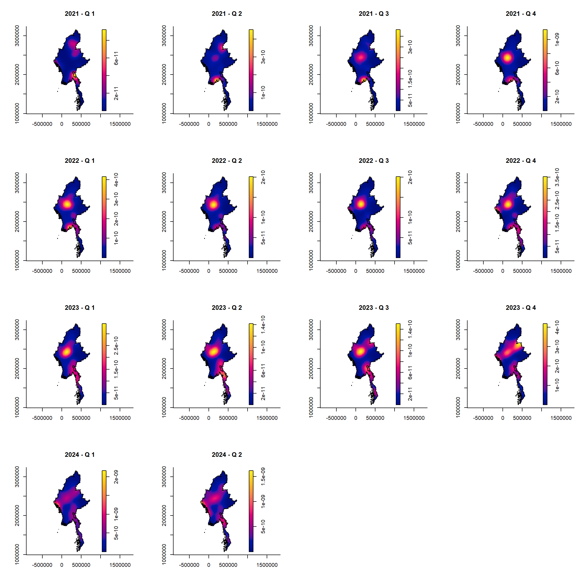
2nd Order Spatio-Temporal Point Pattern Analysis
Based on the 5 event types’ Spatio-Temporal KDE layers, we can see a growing trend in Violence and Protests, while surprisingly a downwards trend for Battles, Strategic Developments and Explosions/Remote Violence. However, it is crucial to know if there is an actual decline in these three downwards trends, as it could be attributed to simply dispersal of events. We shall use G-Function to analyse this by comparing the 2024 Q2 results with the results from 2023 Q2, to see if over a year there is less clustering and overall less events occurring.
acled_sf %>% filter(event_year == 2023, event_quarter == 2) %>% count(event_type, sort = TRUE)Simple feature collection with 5 features and 2 fields
Geometry type: MULTIPOINT
Dimension: XY
Bounding box: xmin: -191261.5 ymin: 1103500 xmax: 518300.4 ymax: 3006373
Projected CRS: WGS 84 / UTM zone 47N
# A tibble: 5 × 3
event_type n geometry
* <chr> <int> <MULTIPOINT [m]>
1 Battles 814 ((-174035.7 2284958), (-152179.1 2277258), (…
2 Explosions/Remote violence 814 ((-191261.5 2351144), (-93596.16 2398133), (…
3 Strategic developments 716 ((-187696.5 2324700), (-174344.6 2321971), (…
4 Violence against civilians 401 ((-138595 2239402), (-120600.4 2242432), (-7…
5 Protests 176 ((275.0944 2569257), (21114.28 2358755), (70…acled_sf %>% filter(event_year == 2024, event_quarter == 2) %>% count(event_type, sort = TRUE)Simple feature collection with 5 features and 2 fields
Geometry type: MULTIPOINT
Dimension: XY
Bounding box: xmin: -208804.4 ymin: 1103500 xmax: 597543.7 ymax: 3026505
Projected CRS: WGS 84 / UTM zone 47N
# A tibble: 5 × 3
event_type n geometry
* <chr> <int> <MULTIPOINT [m]>
1 Explosions/Remote violence 1000 ((-208804.4 2357274), (-201925.4 2354103), (…
2 Battles 960 ((-201925.4 2354103), (-199243.8 2366471), (…
3 Strategic developments 531 ((-197883.4 2339678), (-197577 2330794), (-1…
4 Violence against civilians 297 ((-201925.4 2354103), (-197577 2330794), (-1…
5 Protests 42 ((-174344.6 2321971), (-138595 2239402), (-7…Based on the count, we can observe the difference in the number of events for each of our 3 categories. Explosions/Remote Violence and Battles increased, while Strategic Developments saw a decrease. With this in mind, lets look at their G-function results. I shall filter out the relevant year and quarter for the 3 events, and convert them into ppp objects.
battle_ppp_23_Q2 = battles_sf %>% filter(event_year == 2023, event_quarter == 2) %>% as.ppp()Warning in as.ppp.sf(.): only first attribute column is used for marksbattle_ppp_24_Q2 = battles_sf %>% filter(event_year == 2024, event_quarter == 2) %>% as.ppp()Warning in as.ppp.sf(.): only first attribute column is used for marksdevelop_ppp_23_Q2 = develop_sf %>% filter(event_year == 2023, event_quarter == 2) %>% as.ppp()Warning in as.ppp.sf(.): only first attribute column is used for marksdevelop_ppp_24_Q2 = develop_sf %>% filter(event_year == 2024, event_quarter == 2) %>% as.ppp()Warning in as.ppp.sf(.): only first attribute column is used for marksexplosions_ppp_23_Q2 = explosions_sf %>% filter(event_year == 2023, event_quarter == 2) %>% as.ppp()Warning in as.ppp.sf(.): only first attribute column is used for marksexplosions_ppp_24_Q2 = explosions_sf %>% filter(event_year == 2024, event_quarter == 2) %>% as.ppp()Warning in as.ppp.sf(.): only first attribute column is used for marksNow, I shall attach the boundary data to the ppp objects.
battle_ppp_23_Q2 = battle_ppp_23_Q2[mimu_sub_owin]
battle_ppp_24_Q2 = battle_ppp_24_Q2[mimu_sub_owin]
develop_ppp_23_Q2 = develop_ppp_23_Q2[mimu_sub_owin]
develop_ppp_24_Q2 = develop_ppp_24_Q2[mimu_sub_owin]
explosions_ppp_23_Q2 = explosions_ppp_23_Q2[mimu_sub_owin]
explosions_ppp_24_Q2 = explosions_ppp_24_Q2[mimu_sub_owin]Finally, lets calculate and plot out the G-function results.
battle_G_23_Q2.csr = envelope(battle_ppp_23_Q2, Gest, nsim = 99)Generating 99 simulations of CSR ...
1, 2, 3, 4, 5, 6, 7, 8, 9, 10, 11, 12, 13, 14, 15, 16, 17, 18, 19, 20,
21, 22, 23, 24, 25, 26, 27, 28, 29, 30, 31, 32, 33, 34, 35, 36, 37, 38, 39, 40,
41, 42, 43, 44, 45, 46, 47, 48, 49, 50, 51, 52, 53, 54, 55, 56, 57, 58, 59, 60,
61, 62, 63, 64, 65, 66, 67, 68, 69, 70, 71, 72, 73, 74, 75, 76, 77, 78, 79, 80,
81, 82, 83, 84, 85, 86, 87, 88, 89, 90, 91, 92, 93, 94, 95, 96, 97, 98,
99.
Done.battle_G_24_Q2.csr = envelope(battle_ppp_24_Q2, Gest, nsim = 99)Generating 99 simulations of CSR ...
1, 2, 3, 4, 5, 6, 7, 8, 9, 10, 11, 12, 13, 14, 15, 16, 17, 18, 19, 20,
21, 22, 23, 24, 25, 26, 27, 28, 29, 30, 31, 32, 33, 34, 35, 36, 37, 38, 39, 40,
41, 42, 43, 44, 45, 46, 47, 48, 49, 50, 51, 52, 53, 54, 55, 56, 57, 58, 59, 60,
61, 62, 63, 64, 65, 66, 67, 68, 69, 70, 71, 72, 73, 74, 75, 76, 77, 78, 79, 80,
81, 82, 83, 84, 85, 86, 87, 88, 89, 90, 91, 92, 93, 94, 95, 96, 97, 98,
99.
Done.develop_G_23_Q2.csr = envelope(develop_ppp_23_Q2, Gest, nsim = 99)Generating 99 simulations of CSR ...
1, 2, 3, 4, 5, 6, 7, 8, 9, 10, 11, 12, 13, 14, 15, 16, 17, 18, 19, 20,
21, 22, 23, 24, 25, 26, 27, 28, 29, 30, 31, 32, 33, 34, 35, 36, 37, 38, 39, 40,
41, 42, 43, 44, 45, 46, 47, 48, 49, 50, 51, 52, 53, 54, 55, 56, 57, 58, 59, 60,
61, 62, 63, 64, 65, 66, 67, 68, 69, 70, 71, 72, 73, 74, 75, 76, 77, 78, 79, 80,
81, 82, 83, 84, 85, 86, 87, 88, 89, 90, 91, 92, 93, 94, 95, 96, 97, 98,
99.
Done.develop_G_24_Q2.csr = envelope(develop_ppp_24_Q2, Gest, nsim = 99)Generating 99 simulations of CSR ...
1, 2, 3, 4, 5, 6, 7, 8, 9, 10, 11, 12, 13, 14, 15, 16, 17, 18, 19, 20,
21, 22, 23, 24, 25, 26, 27, 28, 29, 30, 31, 32, 33, 34, 35, 36, 37, 38, 39, 40,
41, 42, 43, 44, 45, 46, 47, 48, 49, 50, 51, 52, 53, 54, 55, 56, 57, 58, 59, 60,
61, 62, 63, 64, 65, 66, 67, 68, 69, 70, 71, 72, 73, 74, 75, 76, 77, 78, 79, 80,
81, 82, 83, 84, 85, 86, 87, 88, 89, 90, 91, 92, 93, 94, 95, 96, 97, 98,
99.
Done.explosions_G_23_Q2.csr = envelope(explosions_ppp_23_Q2, Gest, nsim = 99)Generating 99 simulations of CSR ...
1, 2, 3, 4, 5, 6, 7, 8, 9, 10, 11, 12, 13, 14, 15, 16, 17, 18, 19, 20,
21, 22, 23, 24, 25, 26, 27, 28, 29, 30, 31, 32, 33, 34, 35, 36, 37, 38, 39, 40,
41, 42, 43, 44, 45, 46, 47, 48, 49, 50, 51, 52, 53, 54, 55, 56, 57, 58, 59, 60,
61, 62, 63, 64, 65, 66, 67, 68, 69, 70, 71, 72, 73, 74, 75, 76, 77, 78, 79, 80,
81, 82, 83, 84, 85, 86, 87, 88, 89, 90, 91, 92, 93, 94, 95, 96, 97, 98,
99.
Done.explosions_G_24_Q2.csr = envelope(explosions_ppp_24_Q2, Gest, nsim = 99)Generating 99 simulations of CSR ...
1, 2, 3, 4, 5, 6, 7, 8, 9, 10, 11, 12, 13, 14, 15, 16, 17, 18, 19, 20,
21, 22, 23, 24, 25, 26, 27, 28, 29, 30, 31, 32, 33, 34, 35, 36, 37, 38, 39, 40,
41, 42, 43, 44, 45, 46, 47, 48, 49, 50, 51, 52, 53, 54, 55, 56, 57, 58, 59, 60,
61, 62, 63, 64, 65, 66, 67, 68, 69, 70, 71, 72, 73, 74, 75, 76, 77, 78, 79, 80,
81, 82, 83, 84, 85, 86, 87, 88, 89, 90, 91, 92, 93, 94, 95, 96, 97, 98,
99.
Done.par(mfrow = c(3,2))
plot(battle_G_23_Q2.csr)
plot(battle_G_24_Q2.csr)
plot(develop_G_23_Q2.csr)
plot(develop_G_24_Q2.csr)
plot(explosions_G_23_Q2.csr)
plot(explosions_G_24_Q2.csr)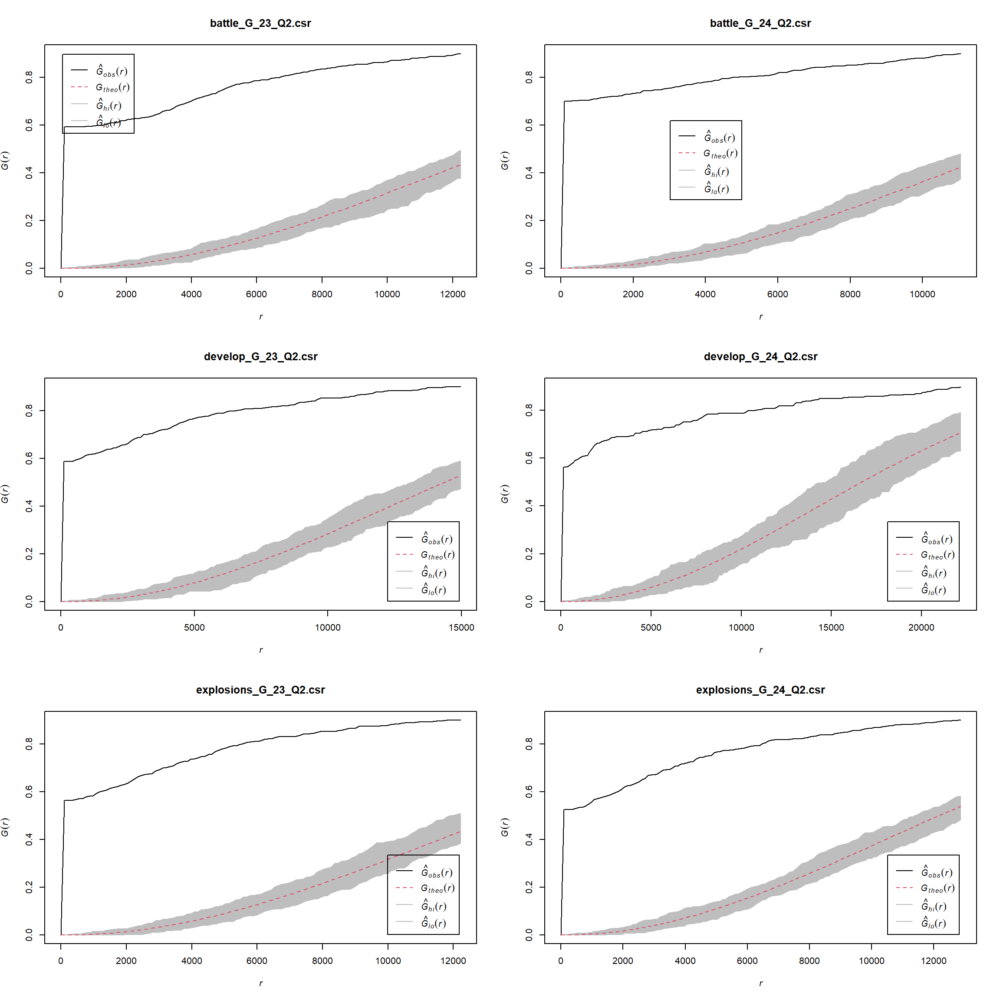
For Strategic Developments and Explosions/Remote Violence, we do see slightly less clustering, especially <500m. This aligns with our hypothesis that events are more dispersed across Myanmar, however, not by much. The surprise was the increase in clustering witnessed for Battles. This shows that there is both an increase in the number of events while still being highly concentrated around specific areas.
Plotting on OpenStreetMap
I have attempted to plot the data onto OpenStreetMap. I convert the KDE data into raster and project it using the EPSG code 32647.
tmap_mode("view")tmap mode set to interactive viewingkde_mm_24_Q2_CvL_raster = raster(kde_mm_24_Q2.CvL)
projection(kde_mm_24_Q2_CvL_raster) = CRS("+init=EPSG:32647")
tm_basemap(leaflet::providers$OpenStreetMap) +
tm_shape(kde_mm_24_Q2_CvL_raster) +
tm_raster("layer") tmap_mode("plot")tmap mode set to plottingI am unsure why the coordinates are not matching.
Observations
Firstly, we can come to the conclusion that majority of the fight occurs in the northern and southern part of Myanmar. However, one thing interesting is the lack of events occurring near the center. Ann San Suu Kyi was arrested and kept in Nay Pyi Taw (Maizland, 2021), the capital of Myanmar, where she seems to have remained after moving from prison to house arrest in 2024 (Ratcliffe, 2024).
Yet the fighting seems to be away from this particular city. Usually we would expect demonstrations to occur near the parliament of the country, and given that Suu Kyi was arrested there, it would make sense for resistance forces to attempt to pressure the government by creating havoc near the official’s buildings. However, there could be a reason for this, and this is highlighted from 2024 Q2.
par(mfrow = c(2,2))
plot(kde_mm_24_Q2.CvL)
plot(violence_24_st_kde, 2, override.par = FALSE, main = paste("2024 - Q", i))
plot(explosions_24_st_kde, 2, override.par = FALSE, main = paste("2024 - Q", i))
plot(battle_24_st_kde, 2, override.par = FALSE, main = paste("2024 - Q", i))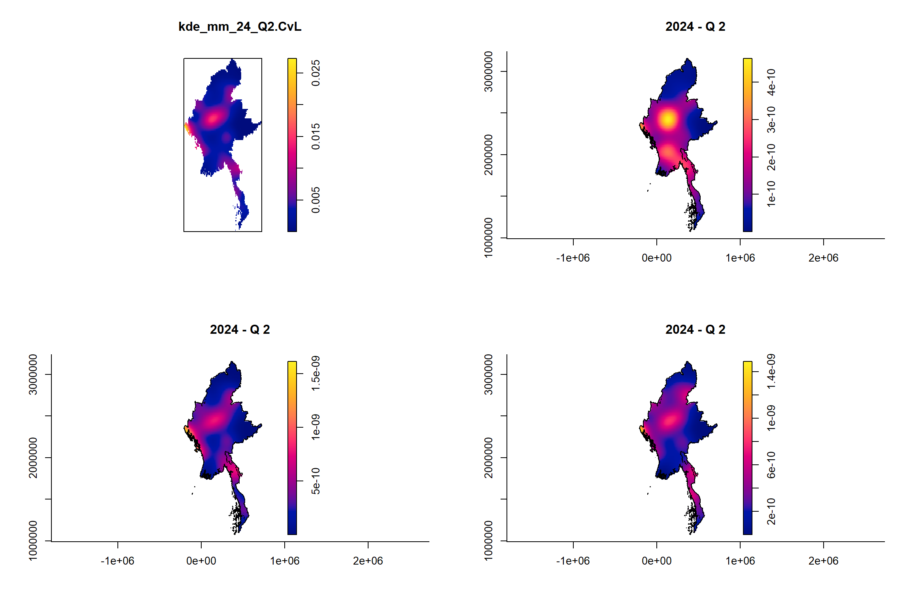
There is a clear correlation between the presence of the Militias, Myanmar’s multiple civil resistance groups, and the presence of events, particularly violent events such as explosions, battles and violence against civilians. The presence of these events suggests violent fighting within these areas.
Furthermore, the opposition has expanded and gained ground since late 2023 (The Economist, 2024). This would also suggest why we see the spread coverage despite the non-reduction in the number of events.
So what can we hope for Myanmar in the future?
We do see an upward trend of fighting, and its unlikely that it will end anytime soon. However, we do see some silver lining.
The increased spread in fighting, while bad, does signal that the military, Junta, is spread thin more than ever, and that the resistance does seem to be gaining ground. As Mr Dustin Barter, a senior research fellow at Global Affairs Think Tank ODI, told Channel News Asia (CNA), “In the past few months, there has been a lot of gains by the revolution and the resistance. There is optimism and hope that the military can be ousted.” (Leong & Ng, 2024).
References
Farge, E., & Mantovani, C. (2024, September 17). Myanmar Military stepping up civilian killings and arrests, says UN report. Reuters. https://www.reuters.com/world/asia-pacific/myanmar-military-intensifies-civilian-killings-arrests-says-un-report-2024-09-17/
Maizland, L. (2022, January 31). Myanmar’s Troubled History: Coups, Military Rule, and Ethnic Conflict. Council on Foreign Relations. https://www.cfr.org/backgrounder/myanmar-history-coup-military-rule-ethnic-conflict-rohingya
Leong, W. K., & Ng, D. (2024, February 1). CNA Explains: What’s happened since Myanmar’s coup 3 years ago? Channel News Asia. https://www.channelnewsasia.com/asia/myanmar-coup-3-years-anniversary-cna-explains-timeline-junta-4091861
Ratcliffe, R. (2024, April 17). Aung San Suu Kyi, Myanmar’s jailed former leader, moved to house arrest, says junta. The Guardian. https://www.theguardian.com/world/2024/apr/17/aung-san-suu-kyi-myanmar-jailed-former-leader-moved-to-house-arrest-says-junta
The Economist. (2024, May 16). The military dictatorship controls less than 50% of Myanmar. https://www.economist.com/asia/2024/05/16/the-military-dictatorship-controls-less-than-50-of-myanmar